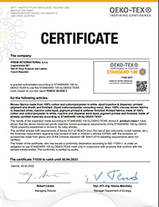

<div fxLayoutAlign="space-around center" fxLayout="row">

    <div fxLayout="column" fxFlex="1100px">

        <div fxLayout="row">

            <div fxLayout="column" fxFlex="70">
                <h3>Quality Assurance</h3>

                <p>We strongly believe that Quality Control is the most important part of our work. We follow the following steps as a thumb rule, without any compromise:</p>

                <ul>
                    <li>Our own quality inspectors regularly check production in production facilities</li>
                    <li>Before shipment, the goods are again inspected and all tests regarding quality are done</li>
                    <li>We have our products tested regularly in Textile Laboratories of Repute</li>
                    <li>Every single step in Production is controlled and certified</li>
                </ul>

                <div fxLayout="row" fxLayoutAlign="space-between center">
                    <div class="column">
                        <h4>Made-Ups</h4>
                        
                    </div>
                    <div class="column">
                        <h4>Fabrics</h4>
                        
                    </div>
                    <div class="column">
                        <h4>Yarn Thread</h4>
                        
                    </div>
                </div>

                <div fxLayout="row">
                    <div class="column">
                        <h4>GOTS - Certificate of Compliance</h4>
                        
                    </div>
                </div>
            </div>
        </div>
    </div>

</div>